Charla sobre Inteligencia Artificial
“La inteligencia artificial está revolucionando el mundo, desde cómo trabajamos hasta cómo nos entretenemos: ¿estás listo para explorar cómo puede cambiar tu vida y el futuro que imaginas?”
Ser Inteligente es:
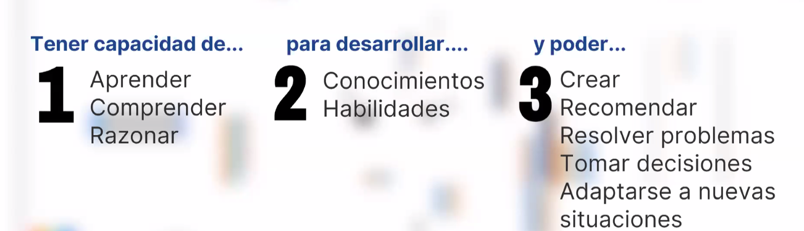Test de Turing
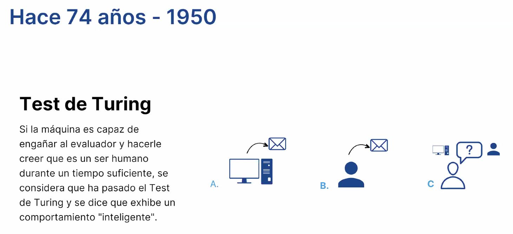Eventos hasta hoy

Rob Thomas
Tiempos de Adopción
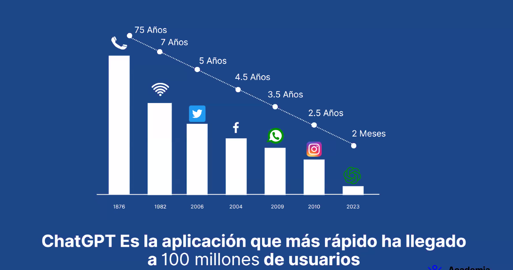4 Formas de usar IA
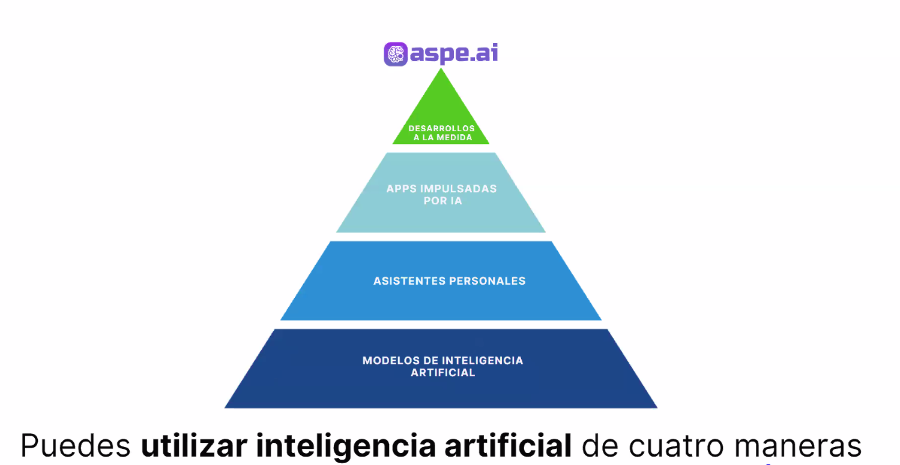Modelos de IA de Texto
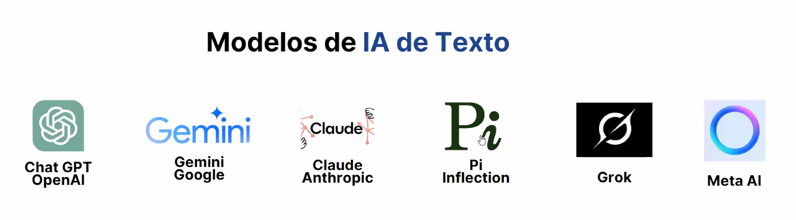1. ¿Qué es la Inteligencia Artificial?
Objetivo: Explicar qué es la IAInteligencia Artificial: Tecnología que imita funciones humanas como el aprendizaje. de forma sencilla, desmitificando ideas erróneas.
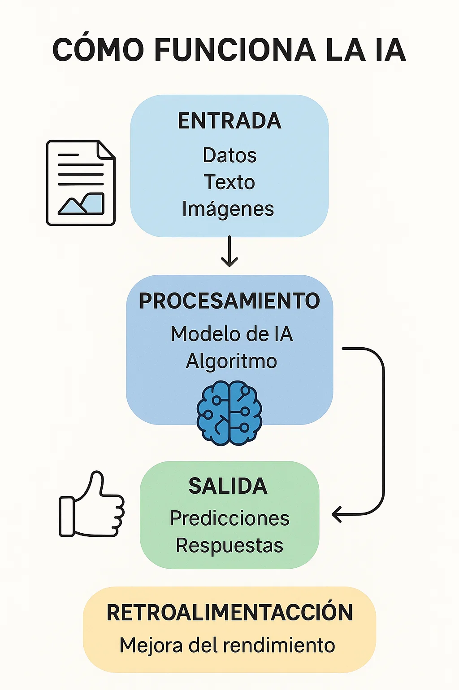Contenido
- Definición: La IA es la capacidad de una máquina para imitar funciones humanas como el aprendizaje, el razonamiento, la percepción o la toma de decisiones. No es magia, sino un conjunto de algoritmos y datos.
- Analogía: Compara la IA con una receta de cocina. Los datos son los ingredientes, los algoritmos son las instrucciones, y el plato final es la tarea que la IA realiza.
Ejemplo Práctico
Muestra una imagen de un asistente virtual como Siri. “Cuando le preguntas a tu celular ‘¿qué tiempo hace hoy?’, la IA escucha tu voz, la convierte en texto, busca información y te responde. Todo en segundos.”
Dinámica
Pide a cada persona que nombre una tarea que le gustaría que una máquina haga por ellos (ej. “organizar mi agenda”). Usa esto para explicar que la IA ya puede hacer algunas de esas tareas.
2. Tipos de IA: Desde lo básico hasta lo avanzado
Objetivo: Mostrar que no toda la IA es igual, y que hay niveles de complejidad.
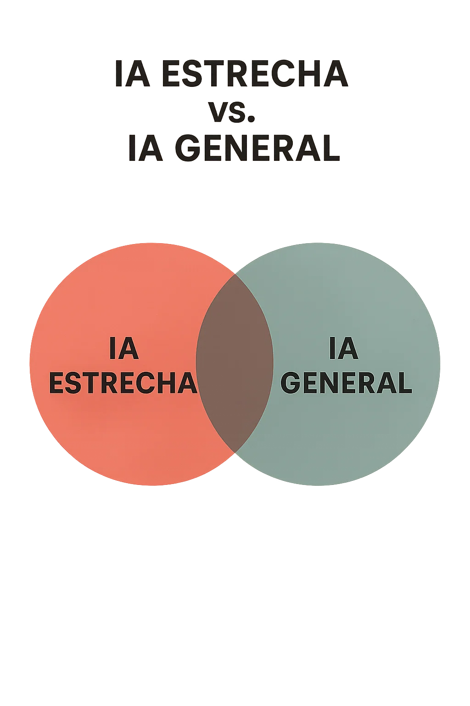Contenido
- IA Estrecha: Diseñada para una tarea específica. Ejemplo: Netflix recomendando películas.
- IA General: Capaz de realizar cualquier tarea intelectual como un humano. No existe aún.
- IA Súperinteligente: Una IA que supera a los humanos en todo. Es especulativa.
Ejemplo Práctico
IA Estrecha: Usa una captura de pantalla de recomendaciones de YouTube. “YouTube usa IA para aprender qué videos te gusta, pero no puede escribir un libro.”
IA General: Usa a JARVIS de Iron Man para ilustrar, pero aclara que no es real aún.
Dinámica
Divide al grupo en parejas y pide que discutan si prefieren una IA que haga una sola cosa muy bien o una IA general. Luego, que compartan sus ideas.
3. IA en la vida cotidiana: ¿Dónde la usamos?
Objetivo: Hacer que los participantes reconozcan cómo la IA ya está en sus vidas.
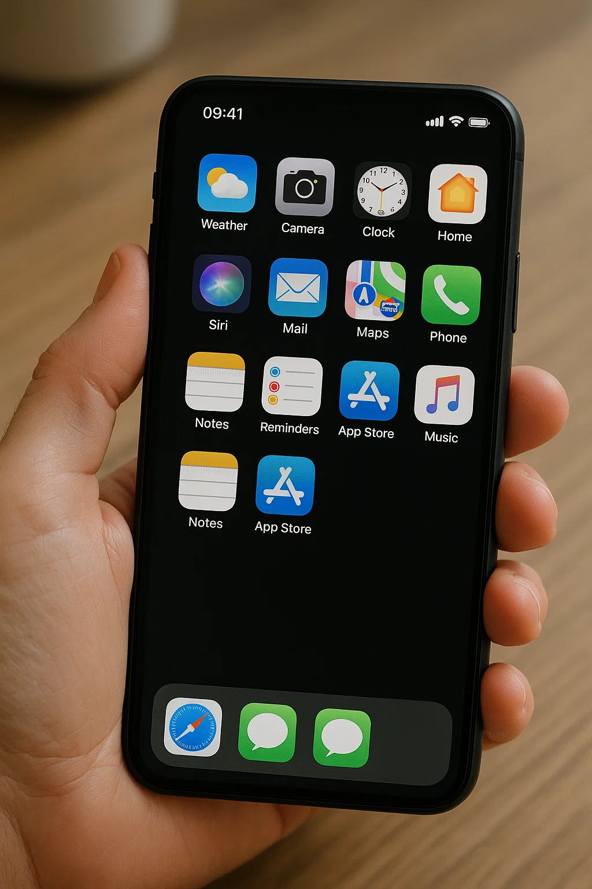Contenido
- Asistentes virtuales: Siri, Alexa, Google Assistant.
- Redes sociales: Algoritmos que deciden qué ves en Instagram.
- Comercio: Recomendaciones en Amazon o detección de fraudes.
- Salud: Diagnósticos médicos asistidos por IA.
- Transporte: GPS con IA (Waze) o autos autónomos.
Ejemplo Práctico
Muestra un video de un auto autónomo de Tesla. “La IA ve el entorno con cámaras, decide cuándo frenar o girar.” O usa Google Translate para traducir una frase en tiempo real.
Dinámica
Pide a cada persona que comparta una app que usa a diario. Explica cómo la IA está detrás (ej. Spotify usa IA para playlists).
4. Cómo funciona la IA: Una mirada sencilla al motor
Objetivo: Explicar los fundamentos de la IA sin tecnicismos.
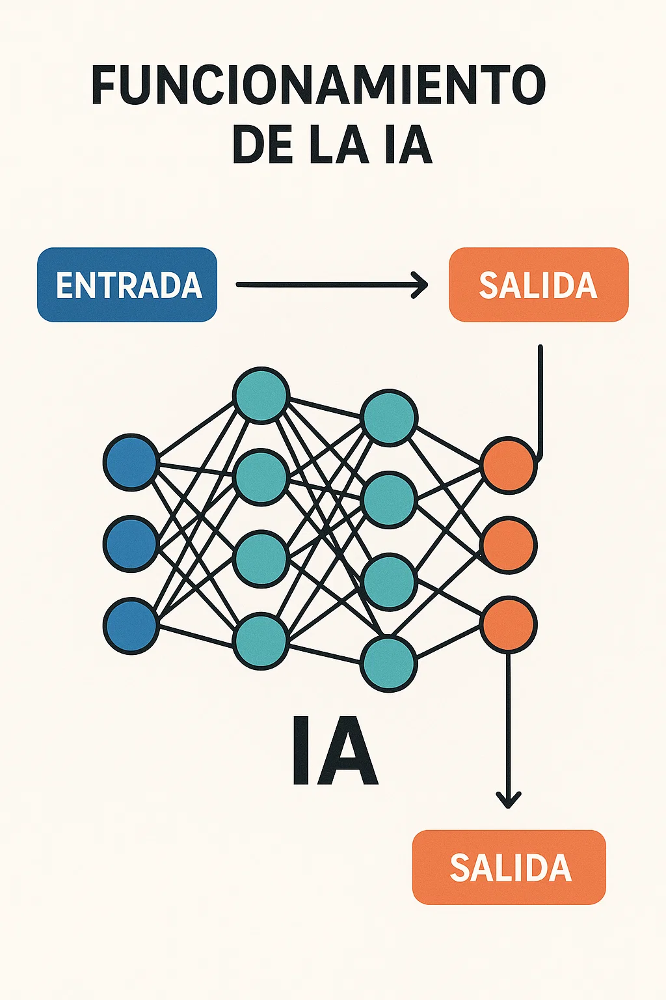Contenido
- Datos: La IA necesita grandes cantidades de información para aprender.
- Algoritmos: Reglas matemáticas que procesan los datos.
- Entrenamiento: La IA “aprende” ajustándose con ejemplos.
Ejemplo Práctico
“Google Photos encuentra fotos de playa porque fue entrenada con millones de imágenes etiquetadas como ‘playa’.” O explica cómo una IA como ChatGPTModelo de lenguaje que genera texto conversacional. responde preguntas.
Dinámica
Muestra 5 imágenes de animales (3 perros, 2 gatos). Pide al grupo que “entrenen” una IA imaginaria diciendo si cada imagen es “perro” o “gato”.
5. El futuro de la IA: Oportunidades y desafíos
Objetivo: Inspirar sobre las posibilidades de la IA, pero también abordar preocupaciones éticas.
Contenido
- Oportunidades: Medicina (predicción de enfermedades), educación (tutores personalizados), medio ambiente (optimización de energía).
- Desafíos: Privacidad, empleos, sesgos en los datos.
Ejemplo Práctico
Oportunidad: AlphaFold resolvió el plegamiento de proteínas, ayudando a crear medicamentos.
Desafío: Una IA de reconocimiento facial confundió a personas de ciertos grupos étnicos.
Dinámica
Pregunta: “Si pudieras usar la IA para resolver un problema del mundo, ¿cuál sería?” Da 1 minuto para que cada persona piense y comparta.
Cierre
Resumen: La IA es el presente, no solo el futuro. Aprendimos qué es, sus tipos, cómo se usa hoy, cómo funciona, y sus oportunidades y desafíos.
Conclusión: “La inteligencia artificial no es solo el futuro; es el presente que tú puedes moldear, ¡así que empieza a explorar, preguntar y crear con ella hoy mismo!”
Preguntas: Invita al grupo a preguntar o reflexionar: “¿Qué les sorprendió más de la IA hoy?”
Recursos: Explora más en xAI o busca videos introductorios sobre IA en YouTube.
Historia de la Inteligencia Artificial
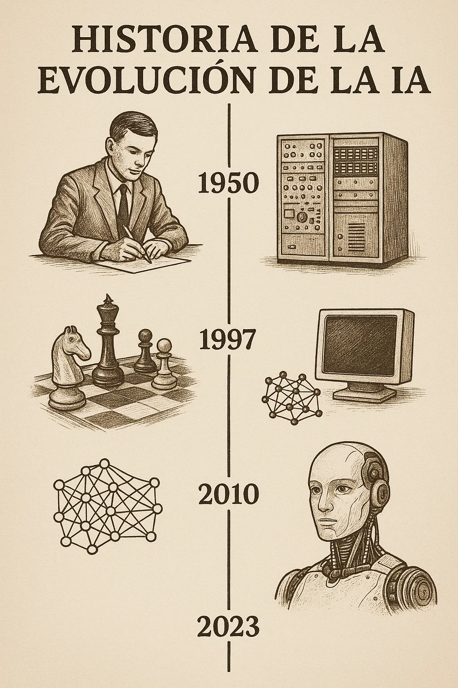400 a.C.
Autómatas en la Grecia antigua, como la paloma mecánica, representan los primeros intentos de máquinas con movimiento propio.
1950
Alan Turing publica “Computing Machinery and Intelligence” y propone el Test de Turing para evaluar la inteligencia de las máquinas.
1956
Conferencia de Dartmouth: John McCarthy acuña el término “inteligencia artificial”, marcando el nacimiento de la disciplina.
1965
Joseph Weizenbaum crea ELIZA, un precursor de los chatbots que simula conversaciones humanas.
1980s
Auge de la IA con sistemas expertos (ej. XCON) y avances en técnicas de aprendizaje profundo.
1997
Deep Blue de IBM derrota al campeón mundial de ajedrez Garry Kasparov, mostrando el poder de la IA en tareas específicas.
2011
Apple lanza Siri, popularizando los asistentes virtuales basados en IA.
2012
AlexNet revoluciona el reconocimiento de imágenes con avances en aprendizaje profundo.
2016
AlphaGo de DeepMind vence al campeón mundial de Go, un hito en IA estratégica.
2020
AlphaFold resuelve el problema del plegamiento de proteínas, impulsando avances en biología.
2025
La IA está integrada en salud, educación y transporte, con debates éticos en curso.
Inteligencias Artificiales en 2025
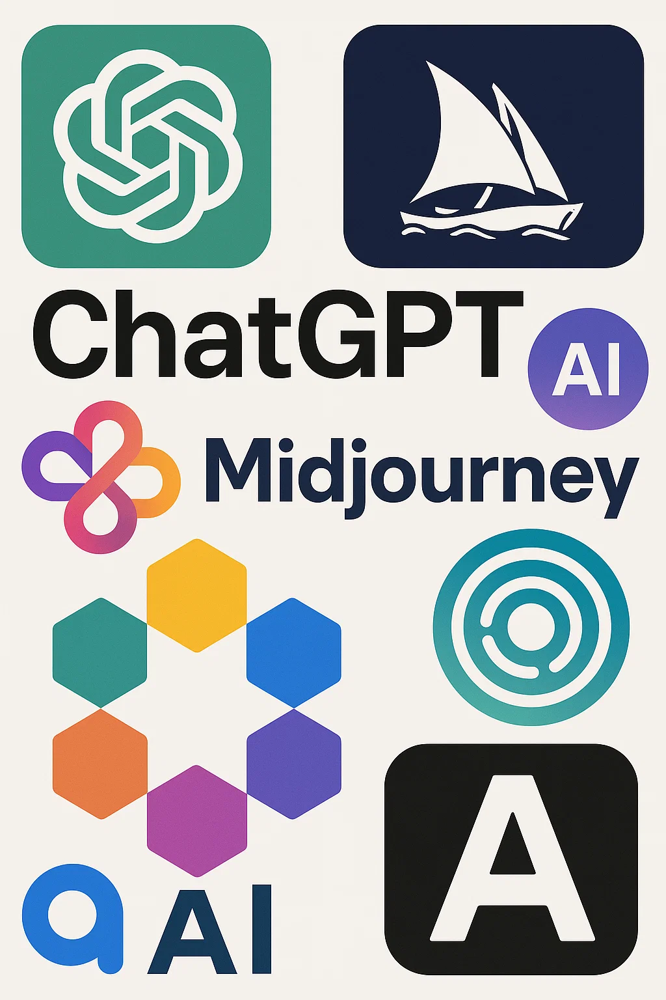Descubre las 10 IAs que están transformando el mundo, desde asistentes conversacionales hasta creadores de videos.
| IA | Enfoque | Ejemplo | Aspecto Ético/Técnico |
|---|---|---|---|
| ChatGPT 5 (OpenAI) | PLNProcesamiento de Lenguaje Natural: Tecnología para entender y generar texto. avanzado y asistencia conversacional | Crear un informe de marketing | Privacidad de datos y automatización de empleos |
| Grok (xAI) | Respuestas veraces y razonamiento crítico | Explicar el cambio climático | Imparcialidad en temas controvertidos |
| Claude Haiku/Sonnet (Anthropic) | Automatización de tareas y texto seguro | Gestionar correos electrónicos | Alineación con regulaciones como AI Act |
| Gemini (Google) | Multimodal y agentes autónomos | Planificar un viaje | Personalización para marketing |
| DeepSeek R1 (DeepSeek) | Texto y código a bajo costo | Crear aplicaciones web | Reducción de huella energética |
| DALL·E 4 (OpenAI) | Imágenes hiperrealistas | Diseñar un logotipo | Debates sobre derechos de autor |
| Midjourney 6 | Imágenes artísticas personalizadas | Crear pósters para eventos | Datos de entrenamiento no regulados |
| Synthesia | Videos con avatares de IA | Video tutorial multilingüe | Riesgos de deepfakes |
| Runway Gen-3 | Generación y edición de videos | Anuncio animado | Manipulación de contenido |
| AlphaFold (DeepMind) | Investigación científica | Diseñar terapias para cáncer | Alta demanda energética |
Tendencias Clave
En 2025, los agentes de IA lideran la automatización, ejecutando tareas complejas. La ética es central, con regulaciones como la AI Act exigiendo transparencia. La sostenibilidad impulsa modelos eficientes como DeepSeek, mientras la creatividad florece con herramientas como DALL·E y Midjourney, aunque persisten debates sobre derechos de autor y desinformación.
Cómo Crear un Prompt Efectivo
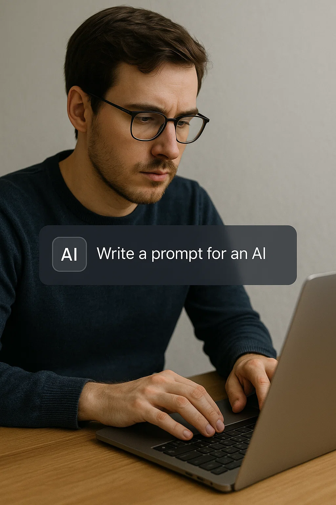Aprende a diseñar instrucciones claras para obtener las mejores respuestas de una IA. Es como darle una receta precisa a un chef: ¡los ingredientes correctos dan resultados perfectos! Sigue estos 6 pasos para dominar la Ingeniería de Prompt.
1. Identifica el Objetivo
Qué hacer: Define claramente qué quieres que la IA logre (ej. responder, generar contenido).
Ejemplo: “Quiero que la IA explique qué es la inteligencia artificial para principiantes.”
Consejo: Piensa en una tarea específica para evitar respuestas vagas.
2. Proporciona Contexto
Qué hacer: Incluye información sobre el público o propósito.
Ejemplo: “Explica la IA a 6 adultos sin experiencia técnica en una charla.”
Consejo: El contexto adapta la respuesta a tus necesidades.
3. Sé Específico
Qué hacer: Detalla formato, tono, longitud y restricciones.
Ejemplo: “Explica la IA en 100 palabras, tono amigable, con ejemplo de Siri.”
Consejo: La especificidad asegura resultados útiles.
4. Incluye Ejemplos
Qué hacer: Proporciona un modelo de respuesta esperada.
Ejemplo: “Escribe un correo como: ‘Estimado Juan, te invitamos a nuestra charla de IA.’”
Consejo: Los ejemplos guían el estilo y formato.
5. Define Restricciones
Qué hacer: Indica qué evitar (ej. jerga, temas sensibles).
Ejemplo: “Sin términos como ‘algoritmo’ ni referencias a ciencia ficción.”
Consejo: Las restricciones mantienen la respuesta relevante.
6. Prueba y Ajusta
Qué hacer: Revisa la respuesta y reformula si es necesario.
Ejemplo: Si es técnica, ajusta: “Usa solo ejemplos cotidianos.”
Consejo: Iterar mejora la calidad del prompt.
Ejemplo de Prompt
Prompt: “Explica qué es la inteligencia artificial en un párrafo de 100 palabras, dirigido a un público general sin experiencia técnica, con un tono amigable y un ejemplo cotidiano como Siri. Evita términos técnicos como ‘machine learning’ o ‘algoritmos’. Incluye una analogía simple, como comparar la IA con una receta de cocina. La respuesta debe ser clara y motivadora para inspirar curiosidad.”
Respuesta esperada: “La inteligencia artificial es como una receta de cocina: con datos e instrucciones, las máquinas hacen tareas humanas, como pensar o decidir. Por ejemplo, cuando usas Siri para buscar una canción, la IA escucha, entiende y responde en segundos. No es magia, ¡es tecnología que aprende! La IA está en Google Maps guiándote a casa o en Netflix sugiriéndote películas. Es una herramienta que nos ayuda a diario y sigue creciendo, lista para que la explores.”
Errores Comunes al Crear Prompts y Cómo Mejorarlos
A continuación, te mostramos 10 ejemplos de prompts mal diseñados, con una explicación de por qué fallan, y cómo mejorarlos siguiendo los 6 pasos para crear un prompt efectivo.
Ejemplo 1: Prompt Vago - "Escribe algo sobre IA."
Por Qué Está Mal:
No especifica el objetivo (¿explicar, persuadir?), el contexto (¿para quién?), ni detalles como formato o tono. La IA podría responder con cualquier cosa, desde un ensayo técnico hasta una historia ficticia.
Prompt Mejorado:
"Explica qué es la inteligencia artificial en un párrafo de 100 palabras, dirigido a un público general sin experiencia técnica, con un tono amigable y un ejemplo cotidiano como Siri. Evita términos técnicos como ‘machine learning’ o ‘algoritmos’. Incluye una analogía simple, como comparar la IA con una receta de cocina. La respuesta debe ser clara y motivadora para inspirar curiosidad. Si el texto es demasiado técnico, ajusta usando ejemplos más simples."
Ejemplo 2: Sin Contexto - "Haz una presentación sobre tecnología."
Por Qué Está Mal:
No especifica la audiencia, el propósito ni el tipo de tecnología. Además, no define formato ni restricciones, lo que podría incluir temas irrelevantes.
Prompt Mejorado:
"Crea una presentación de 5 diapositivas sobre los avances en inteligencia artificial para una audiencia de estudiantes de secundaria (14-16 años) en un taller educativo. Usa un tono sencillo y motivador, con imágenes coloridas y ejemplos prácticos como el uso de IA en videojuegos o asistentes virtuales. Cada diapositiva debe tener un título y 3-5 puntos clave en formato de viñetas, con un máximo de 50 palabras por diapositiva. Evita temas complejos como algoritmos o ética de IA. Si el contenido es demasiado avanzado, simplifica usando más ejemplos cotidianos."
Ejemplo 3: Demasiado General - "Dame una lista de cosas interesantes."
Por Qué Está Mal:
No define qué significa "interesantes", ni el tema, la audiencia o el formato. La IA podría generar una lista irrelevante.
Prompt Mejorado:
"Proporciona una lista de 10 datos interesantes sobre la inteligencia artificial para incluir en un boletín mensual dirigido a empleados de una empresa tecnológica. Usa un tono profesional pero accesible, con cada dato en una oración de 15-20 palabras. Incluye ejemplos como: ‘La IA de DeepMind venció al campeón mundial de Go en 2016.’ Evita datos demasiado técnicos o estadísticas complejas. Si la lista no es relevante para el público, ajusta enfocándote en aplicaciones prácticas de IA en el trabajo."
Ejemplo 4: Uso de Jerga sin Explicación - "Explica machine learning para principiantes."
Por Qué Está Mal:
Usa un término técnico ("machine learning") que podría confundir a principiantes. No especifica el contexto, formato ni restricciones.
Prompt Mejorado:
"Explica cómo las máquinas aprenden a realizar tareas en un párrafo de 80-100 palabras, dirigido a adultos sin conocimientos técnicos, para un blog introductorio sobre IA. Usa un tono amigable y una analogía sencilla, como comparar el aprendizaje de máquinas con un niño que aprende a reconocer animales. Incluye un ejemplo práctico, como: ‘Una máquina aprende a identificar gatos viendo miles de fotos de gatos.’ Evita términos técnicos como ‘machine learning’, ‘redes neuronales’ o ‘algoritmos’. Si la explicación es confusa, ajusta usando ejemplos más cotidianos."
Ejemplo 5: Sin Formato Definido - "Escribe un correo invitando a un evento."
Por Qué Está Mal:
No define el tono, el destinatario ni los detalles del evento. Sin un ejemplo, el estilo del correo podría ser inapropiado.
Prompt Mejorado:
"Escribe un correo electrónico formal invitando a un cliente a un evento de lanzamiento de un producto de IA, programado para el 20 de junio de 2025 en Bogotá, de 6:00 p.m. a 9:00 p.m. El correo debe tener un tono profesional y cortés, con un máximo de 150 palabras, incluyendo un saludo, una breve descripción del evento (como ‘presentaremos nuestra nueva herramienta de IA para marketing’), y un cierre con RSVP. Usa un formato como: ‘Estimado [Nombre], le invitamos a… Atentamente, [Tu Nombre].’ Evita jerga técnica o detalles logísticos excesivos. Si el correo parece demasiado informal, ajusta el tono para que sea más profesional."
Ejemplo 6: Sin Restricciones - "Haz un resumen de la historia de la IA."
Por Qué Está Mal:
No limita el alcance, lo que podría resultar en un resumen demasiado largo. No especifica audiencia ni formato.
Prompt Mejorado:
"Resume la historia de la inteligencia artificial en un párrafo de 150 palabras, dirigido a un público general para un artículo en una revista educativa. Usa un tono informativo y accesible, destacando 3-4 hitos clave, como: ‘En 1956, John McCarthy acuñó el término IA en Dartmouth.’ Evita detalles técnicos como algoritmos o nombres de modelos específicos, y no incluyas eventos posteriores a 2025. Si el resumen es demasiado largo o técnico, ajusta reduciendo detalles y usando un lenguaje más simple."
Ejemplo 7: Prompt Contradictorio - "Escribe un artículo corto y detallado sobre IA."
Por Qué Está Mal:
"Corto" y "detallado" son contradictorios sin aclarar el equilibrio. No define longitud ni contexto.
Prompt Mejorado:
"Escribe un artículo de 300 palabras sobre los beneficios de la inteligencia artificial, dirigido a propietarios de pequeñas empresas para un blog de tecnología. Usa un tono optimista y profesional, destacando 3 beneficios clave (como automatización, análisis de datos y personalización), con un ejemplo práctico por beneficio, como: ‘La IA puede analizar datos de ventas para predecir tendencias.’ Evita términos técnicos como ‘big data’ o ‘modelos predictivos’. Si el artículo es demasiado largo, ajusta reduciendo a 2 beneficios con ejemplos más breves."
Ejemplo 8: Sin Ejemplo de Estilo - "Crea un anuncio para un producto de IA."
Por Qué Está Mal:
No proporciona un ejemplo de estilo ni especifica el público o medio, lo que podría resultar en un anuncio inapropiado.
Prompt Mejorado:
"Crea un anuncio de 50 palabras para una herramienta de IA que genera contenido para redes sociales, dirigido a emprendedores jóvenes, para publicar en Instagram. Usa un tono creativo y dinámico, incluyendo un llamado a la acción como: ‘¡Prueba nuestra herramienta hoy y aumenta tu alcance!’ Evita jerga técnica o precios. Si el tono no es adecuado, ajusta para que sea más atractivo para el público objetivo."
Ejemplo 9: Prompt Demasiado Abierto - "Genera ideas para un proyecto."
Por Qué Está Mal:
Es demasiado abierto, sin especificar el tipo de proyecto, objetivos o limitaciones, lo que podría generar ideas irrelevantes.
Prompt Mejorado:
"Genera 5 ideas de proyectos de IA para un curso de tecnología dirigido a estudiantes universitarios, con un enfoque en resolver problemas cotidianos. Cada idea debe incluir un título y una descripción de 30-40 palabras, como: ‘App de Estudio con IA: Una app que crea planes de estudio personalizados.’ Evita proyectos que requieran hardware avanzado o conocimientos técnicos profundos. Si las ideas son demasiado complejas, ajusta para que sean más accesibles para estudiantes."
Ejemplo 10: Sin Instrucciones de Ajuste - "Escribe un poema sobre la IA."
Por Qué Está Mal:
No indica cómo ajustar si el resultado no es satisfactorio, ni especifica estilo, longitud o tono.
Prompt Mejorado:
"Escribe un poema de 4 estrofas, con 4 versos cada una, sobre los beneficios de la IA, para incluir en un evento escolar dirigido a niños de 10-12 años. Usa un tono alegre y rimas simples, como: ‘La IA nos ayuda a aprender, con juegos que no dejan de sorprender.’ Evita temas complejos o tristes. Si el poema no rima bien o es demasiado avanzado, ajusta usando rimas más simples y un lenguaje más infantil."
Impacto en las Carreras Profesionales
Objetivo: Mostrar cómo la IA transforma las profesiones, creando desafíos y oportunidades.
La inteligencia artificial está cambiando el mundo laboral, automatizando tareas repetitivas, mejorando profesiones existentes y creando nuevos roles. Mientras algunos trabajos enfrentan riesgos, otros se benefician de herramientas de IA, y surgen oportunidades para quienes se adapten.
Carreras Afectadas
| Nivel de Impacto | Ejemplos de Carreras | Efecto de la IA |
|---|---|---|
| Alto (Riesgo de Automatización) | Entrada de datos, telemarketing, operarios de líneas de ensamblaje | La IA reemplaza tareas repetitivas, reduciendo la demanda de estos roles. |
| Moderado (Aumentación) | Marketing, atención médica, educación | La IA mejora la productividad (ej. diagnósticos asistidos, campañas personalizadas). |
| Bajo (Nuevas Oportunidades) | Éticos de IA, científicos de datos, ingenieros de prompts | Surgen roles para diseñar, entrenar y supervisar sistemas de IA. |
Oportunidades
- UpskillingCapacitación en nuevas habilidades, como usar herramientas de IA.: Aprender a usar IA (ej. prompts) o programar abre puertas.
- Habilidades humanas: La creatividad, empatía y liderazgo son cada vez más valiosas.
- Nuevos roles: Profesiones como entrenadores de IA o especialistas en ética están en auge.
Desafíos
- Desplazamiento laboral: Algunos trabajos desaparecerán, requiriendo reconversión.
- Capacitación: Es necesario invertir en educación para adaptarse.
- Ética: Decisiones de IA en contratación o evaluación pueden ser sesgadas.
Ejemplo Práctico
Los profesionales de marketing usan herramientas de IA para automatizar campañas, liberando tiempo para estrategias creativas. Al mismo tiempo, nuevos roles como ingenieros de promptsProfesionales que diseñan instrucciones para IAs. están surgiendo para optimizar herramientas como ChatGPT.
Dinámica
Pide a cada participante que nombre un trabajo que crea que la IA podría cambiar. Discute si la IA lo reemplazaría o lo mejoraría (ej. un médico usa IA para diagnósticos, pero no es reemplazado).
Encuesta para Participantes
Objetivo: Queremos conocer tu opinión sobre la charla para mejorar en el futuro. Por favor, completa esta breve encuesta que incluye preguntas sobre lo que aprendiste, tus intereses y áreas de mejora.
Completar EncuestaNota: La encuesta se abrirá en una nueva pestaña. Tus respuestas serán almacenadas de forma segura en Google Forms.